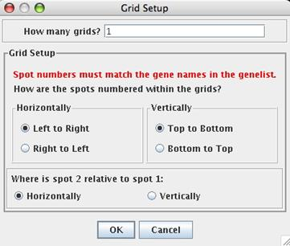
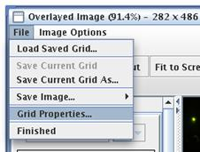

Create/Edit Grid (Control A)
When you begin the addressing and gridding process, you should first see a merged image of your red and green tiff files, and where red and green are superimposed, you should see a shade of yellow. Then you will be asked four questions that tell MAGIC Tool how the spots are numbered, shown in the snapshot below. This step, called Addressing, is the easiest one to make a mistake on, so be very careful when answering the four questions as they appear in the window. It is vital you understand how your spots are organized on the microarray and in the gene list. All questions should be answered according to the way you see the merged image of your microarray in the viewing window. Are the genes printed in duplicate? If so, are the duplicate spots horizontal or vertical? You will need to know how many grids there are as well as the order of the spots in your gene list compared to the image in MAGIC Tool. The default answers to the Grid Setup questions correspond to the way you would read a book: left to right, top to bottom, with the second spot horizontal of the first one. It cannot be overemphasized how critical this step is. If you get this part wrong, you will not know the correct identity of any of the spots. Once you press OK, you have finished the Addressing step, but you can always choose File, Grid Properties in the Gridding window to get another chance to answer the four questions.
|  |  |
Gridding is much easier. The purpose of gridding is to draw little boxes around each feature so the spots are in the center of the boxes. You may find it helpful to zoom in on the first grid of spots. To zoom in, click on the "Zoom In" button and then click where you want the zoom to center. The number one tab should be selected as the default.
Navigate the image until you can see the first grid as the one you know to be the first grid in the original layout of your microarray. If you want, you can adjust the contrast to help illuminate faint spots. To do this, slide the indicator that is currently pointing to 100% contrast near the top of this window. If the maximum value of the slider is still not enough contrast, you can adjust further by typing the percentage contrast you want in the box next to the slider. Adjusting contrast does NOT affect the raw data; it only allows you to see spots better for this step.
To grid, you simply click on three spots. First, click on the button that says "Set Top Left Spot" and then click on the center of the top left spot. Second, click on the button that says "Set Top Right Spot" and then click on the center of the top right spot. Third, click on the button that says "Set Bottom Row" and then click on the center of any spot in the bottom row. Choose a good spot to make this step easier. Enter the information for the number of rows and columns. Rows and columns are defined based on the way you are currently viewing the tiff file. To finish this grid, click on "Update" button. At this time, you should see all the spots in the first grid surrounded by boxes as shown to the right. (You may need to zoom out to see the full grid.)
At this time, see if the spots look centered in the boxes. If not, then adjust the position of the boxes either by clicking on the appropriate button and then the correct spot, by manually typing in numbers to adjust the boxes, or by adjusting the grid with the mouse. If you click anywhere inside the grid, you can drag the entire grid to a new location. The grid can be resized from a corner by clicking on one of the gray dots and dragging the mouse. As you drag, the new size and position of the grid will be displayed. Finally, if you click one of the rotation buttons, the entire grid will rotate around its center, allowing you to adjust for slightly tilted grids on your images. If you decide to manually tune the grid by changing the values in the boxes, note that the position of the mouse is displayed in the bottom left corner of the window so you can determine if the numbers should be bigger or smaller to shift the boxes in the correct direction. This step takes a bit of practice, but it is MUCH easier than most other methods for manual gridding, gives you more control and understanding of the process.
Once the first grid is properly gridded, it is time to repeat this process for grid number two. Press and hold the Control (Ctrl) key on the keyboard, then click on the middle of the top left spot of grid #2. The same grid, translated to the location specified by your mouse click, will appear as grid #2, and all the numbers in the boxes on the left will be filled in automatically. If you release the Control key, you can adjust the grid just as you did above. Repeat this process for all grids. Each time you click while holding down the Control key, you will automatically place the next lowest number grid that has not already been defined. Continue this process until all the grids are surrounded with the boxes.
You can save your current grid at any time, using File, Save Current Grid (or Save Current Grid As... to save under a different name). Grid files are automatically given a suffix of ".grid". You can close the gridding window without saving, and the current grid will automatically be restored the next time you open the gridding window (without asking the four questions again). If you close the project, however, you must save your grid before you close the project, and choose the option Load Saved Grid when you begin gridding next time. This lets you pick back up where you left off with gridding.
When you have finished gridding all the grids on the microarray, click on the "Done!" button. If you have not already saved your grid, you will be prompted to do so before moving on to the next step. If the number of genes in your gene list and the number of spots you gridded do not match, you will get an error message. You must have exactly one grid square for each line (gene or gene replicate) in the gene list. If not, you probably will make an error identifying the spots later so you are required to fix this problem now. If your gene list and the number of gridded spots match, then you will be informed of the total number of spots and allowed to save the grid file for further use.
You can take a snapshot of the combined tiff images, before, after, or during the gridding process. You can save an image of whatever is currently showing inside the gridding window, in tiff, jpg or gif format. (Tiff format works on all drawing and word processing programs so it is a universal format. Jpeg is good for images such as this that have many shades, like a photograph. Gif is the simplest format but may lose some of the subtlety of your original file.) This saved merged image is useful if you want to document your gridding process and can be used for publishing or teaching.